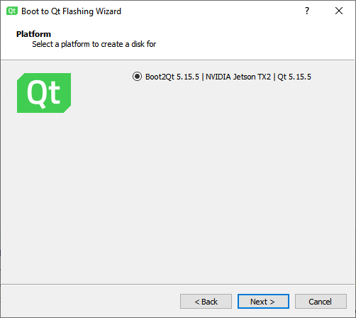

Connect Boot to Qt devices
Create connections between Boot to Qt devices and Qt Creator to run, debug, and analyze applications on them.
Note: Enable the Boot to Qt plugin to use it.
To configure connections between Qt Creator and a Boot to Qt device:
- Check that you can reach the IP address of the device, or use USB to connect it.
- Go to Preferences > Kits > Qt Versions.
- Select Add to add the Qt version for Boot to Qt.
- Go to Preferences > Kits > Compilers.
- Select Add to add the compiler for building the applications.
- Go to Tools > Flash Boot to Qt to flash the Boot to Qt image to an SD card with Boot to Qt Flashing Wizard.

- Follow the instructions of the wizard to flash the image to the SD card.
- Go to Preferences > Devices > Devices.
- Select Add to add a Boot to Qt device.
Qt Creator automatically detects devices connected with USB.
- Go to Preferences > Kits.
- Select Add to add a kit for building for the device.
- Select the Qt version, compiler, and device that you added above.
- In Run device, select Boot2Qt Device in Type, and then select the actual device to run on in Device.
- To specify build settings:
- Open a project for an application you want to develop for the device.
- Go to Projects > Build & Run to activate the kit that you specified above.
- Go to Run Settings to specify run settings. Usually, you can use the default settings.
- When you run the project, Qt Creator deploys the application as specified in Deploy Settings. By default, Qt Creator copies the application files to the device.
See also Configure SSH connections, Generate SSH keys, Enable and disable plugins, How To: Develop for Boot to Qt, How To: Manage Kits, Boot to Qt Deploy Configuration, Boot to Qt Run Settings, and Developing for Boot to Qt Devices.